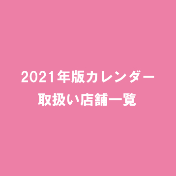
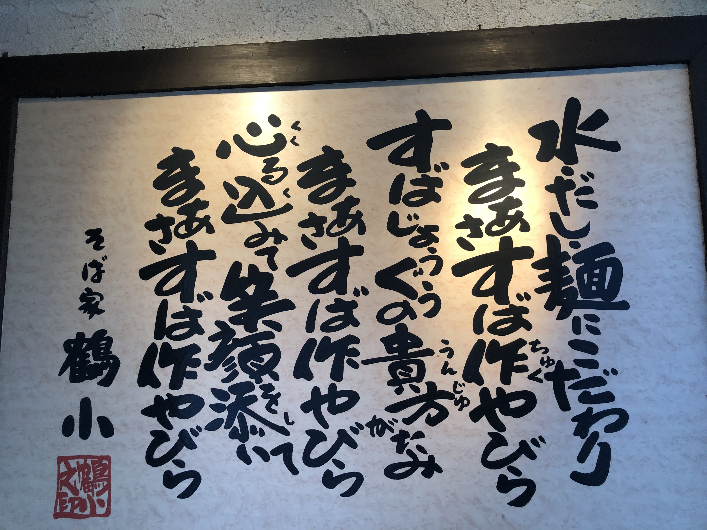
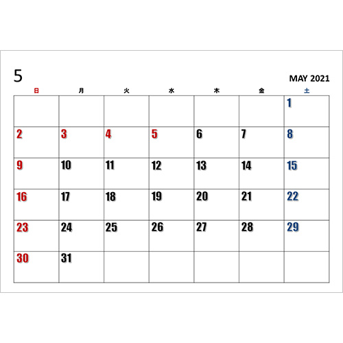
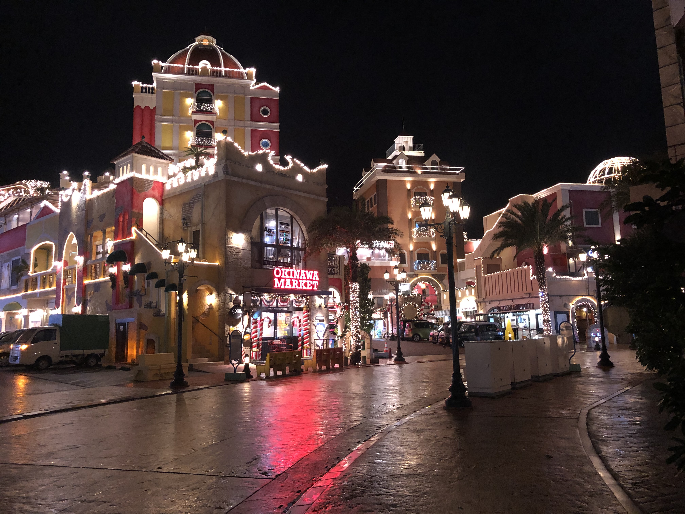

HOME_underscore TERRACE
食事付き、光熱費込のエンジニアシェアハウス 【_underscore TERRACE
】in横浜、松戸、栗橋(埼玉)、藤代(茨城)
食事付き、光熱費込のエンジニアシェアハウス【_underscore TERRACE 】in横浜、松戸、栗橋(埼玉)、藤代(茨城)

2020.05.07
_underscore TERRACE


_underscore
TERRACEは現役のエンジニアもしくはデザイナー、これからエンジニア、デザイナーになりたい方限定のシェアハウスです。
神奈川県横浜市、埼玉県栗橋市で運営をしています。
どちらの物件も入居時の敷金・礼金・保証金など、家賃・共益費以外の初期費用は一切かかりませんし、保証人は不要で入居時の審査もありません。
神奈川県横浜市、埼玉県栗橋市で運営をしています。
どちらの物件も入居時の敷金・礼金・保証金など、家賃・共益費以外の初期費用は一切かかりませんし、保証人は不要で入居時の審査もありません。

みんなで目標設定も♫
目次
_underscore TERRACE のサポート内容について
入居者の方は下記のサポートを受けることができます。
- お米・パスタ・卵食べ放題
- お仕事の紹介（転職先でも案件でもOK）
- メンタリング
お米・パスタ・卵食べ放題
今はスキルアップに集中したいので仕事は最低限しかいれない、急な出費があり金銭的な余裕がなくなってしまった。そんなときでもご飯が食べられない。ということがないように、「お米、パスタ、卵」を支給しますのでたくさん食べてくださいね。
管理人が在住
各シェアハウスには管理人が一緒に住んでくれています。
管理人には毎朝のゴミ捨てや共用部分の掃除等をお願いしているので
他のシェアハウスと違い、ゴミ捨てや掃除の登板などはありません。
その分、技術の勉強に集中することができます。
管理人には毎朝のゴミ捨てや共用部分の掃除等をお願いしているので
他のシェアハウスと違い、ゴミ捨てや掃除の登板などはありません。
その分、技術の勉強に集中することができます。
毎月一回シェアハウス内で食事会
住民の人同士の交流を深めるために毎月1回食事会をします。
予算に関して上限はありますが基本的には僕が全て出すのでお金等は気にせずご参加頂けたらと思います。
予算に関して上限はありますが基本的には僕が全て出すのでお金等は気にせずご参加頂けたらと思います。
お仕事の紹介
エンジニアとして生きていくということは、エンジニアとして「稼ぐ」ということなので、技術がある方、ついてきた方には信頼できる僕の知り合いのお仕事を紹介します。
もちろん、必ずしも紹介した仕事をやらなくてはいけないわけではないので、やりたい案件があればやって頂く。くらいで構いません。
また紹介したからといって僕がキックバックをもらうなどは一切ありません。
また案件単位ではなく、エンジニアとして就職したい。という場合でも紹介をさせて頂きます。
フリーランスとして働きたい、就職したいなど要望があればどんどん教えてください。
もちろん、必ずしも紹介した仕事をやらなくてはいけないわけではないので、やりたい案件があればやって頂く。くらいで構いません。
また紹介したからといって僕がキックバックをもらうなどは一切ありません。
また案件単位ではなく、エンジニアとして就職したい。という場合でも紹介をさせて頂きます。
フリーランスとして働きたい、就職したいなど要望があればどんどん教えてください。
メンタリングについて
こちらは+2万円で月ごとにつけられるオプションです。
僕がプログラミングとサービス創りのメンターをします。
「html,css,railsを使ったサービス作りのリリースまでのプログラミングのサポート」を月2万円でさせて頂きます。
巷のプログラミングスクールに入ると数十万円は当たり前にかかります。
もちろん、払える方はいいですがエンジニアになりたい人が誰しもそう簡単に用意できる額ではないと思っています。
また、僕は「コードをかけるエンジニア」と「サービスを創ってリリースできるエンジニア」には大きな差があると思っています。
スクールでは基本的に「コードをかけるエンジニア」になるためのことは教えてくれます。
しかし、もう一方を教えてくれるところは多くありません。
自分で考えて、創って、リリースして、誰かに使ってもらって、喜んでもらう。この流れが
エンジニアにとって本当の楽しみであると僕は思っています。
そこで僕はhtml、css、Ruby on Rails自体はもちろん、リリース時に必要なことまでサポートします。
それ以外にも希望であれば困った時の解決法、エンジニアのキャリア、スタートアップでエンジニアとして働く上で必要なものなども僕ができる限りでサポートしていけたらと思っています。
また未経験からエンジニアになる際、実務経験がないから採用されない→実務経験付けたいけど採用されないからつけれないという悪魔のようなループが存在します。
それを抜け出すためにもある程度技術がついてきたら僕の案件をサポートをしながらやって頂いています。そうすることで実務経験がつくので採用もされやすくなります。
具体的には日々slack上でコミュニケーションをとりながら、
毎週1回、通話or直接お会いしてその週の課題や進捗をみて次のアドバイスをさせて頂きます。また毎週その人にあった課題をださせて頂きます。
メンタリングオプションについて今月はつけるけど、来月はいらないなど
月によって柔軟に変えて頂いて大丈夫です。
僕がプログラミングとサービス創りのメンターをします。
「html,css,railsを使ったサービス作りのリリースまでのプログラミングのサポート」を月2万円でさせて頂きます。
巷のプログラミングスクールに入ると数十万円は当たり前にかかります。
もちろん、払える方はいいですがエンジニアになりたい人が誰しもそう簡単に用意できる額ではないと思っています。
また、僕は「コードをかけるエンジニア」と「サービスを創ってリリースできるエンジニア」には大きな差があると思っています。
スクールでは基本的に「コードをかけるエンジニア」になるためのことは教えてくれます。
しかし、もう一方を教えてくれるところは多くありません。
自分で考えて、創って、リリースして、誰かに使ってもらって、喜んでもらう。この流れが
エンジニアにとって本当の楽しみであると僕は思っています。
そこで僕はhtml、css、Ruby on Rails自体はもちろん、リリース時に必要なことまでサポートします。
それ以外にも希望であれば困った時の解決法、エンジニアのキャリア、スタートアップでエンジニアとして働く上で必要なものなども僕ができる限りでサポートしていけたらと思っています。
また未経験からエンジニアになる際、実務経験がないから採用されない→実務経験付けたいけど採用されないからつけれないという悪魔のようなループが存在します。
それを抜け出すためにもある程度技術がついてきたら僕の案件をサポートをしながらやって頂いています。そうすることで実務経験がつくので採用もされやすくなります。
具体的には日々slack上でコミュニケーションをとりながら、
毎週1回、通話or直接お会いしてその週の課題や進捗をみて次のアドバイスをさせて頂きます。また毎週その人にあった課題をださせて頂きます。
メンタリングオプションについて今月はつけるけど、来月はいらないなど
月によって柔軟に変えて頂いて大丈夫です。
このシェアハウスにかける想い
僕の夢は「人生のターニングポイントを生みだすサービスを創る」ことです。
サービスを使ってくれた人がそれをきっかけ大きく人生が変わった、はっぴーが増えた。となってもらえるように日々色々なサービス開発に関わっています。
このシェアハウスも同じです。エンジニアシェアハウスを一つのサービス、プロダクトで
す。
ここに入ってくれた人たちがエンジニアになって
やりたいことができるようになって、その後の人生が変わるきっかけになるようなサポート体制を作っていきます。
十分なサポートとは単発ではなく、継続したものが必要不可欠だと思っているのでエンジニアハウスを継続して運営するために家賃を頂いておりますが、入居者になるべく負担をかけず、技術向上に集中できる環境を作っていきたいと思います。
そのため様々なサポートをしています。今後もサポート内容は入居者の様子をみながら必要なものを増やしていきたいと思っています。
サービスを使ってくれた人がそれをきっかけ大きく人生が変わった、はっぴーが増えた。となってもらえるように日々色々なサービス開発に関わっています。
このシェアハウスも同じです。エンジニアシェアハウスを一つのサービス、プロダクトで
す。
ここに入ってくれた人たちがエンジニアになって
やりたいことができるようになって、その後の人生が変わるきっかけになるようなサポート体制を作っていきます。
十分なサポートとは単発ではなく、継続したものが必要不可欠だと思っているのでエンジニアハウスを継続して運営するために家賃を頂いておりますが、入居者になるべく負担をかけず、技術向上に集中できる環境を作っていきたいと思います。
そのため様々なサポートをしています。今後もサポート内容は入居者の様子をみながら必要なものを増やしていきたいと思っています。
物件情報・空き情報について
共通事項
共益費：1万円(電気、水道、ガス、ネット込)
敷金、礼金、補償金、仲介手数料：0
※入居時にも家賃、共益費以外のお金はかかりません
その他：冷蔵庫、洗濯機、電子レンジなど基本的なものは完備。
敷金、礼金、補償金、仲介手数料：0
※入居時にも家賃、共益費以外のお金はかかりません
その他：冷蔵庫、洗濯機、電子レンジなど基本的なものは完備。
_underscore TERRACE 横浜
名前：_underscore TERRACE 横浜
場所：神奈川県横浜市：横浜駅から徒歩20分
設備：トイレ、独立洗面台、お風呂、キッチンなど
近隣：近くにセブンイレブンなどのお店があることはもちろん、横浜駅にも徒歩でいける好立地です。
お申し込み： Twitter（@howstep_hikaru）またはLINEにご連絡ください。
お写等：こちら
場所：神奈川県横浜市：横浜駅から徒歩20分
設備：トイレ、独立洗面台、お風呂、キッチンなど
近隣：近くにセブンイレブンなどのお店があることはもちろん、横浜駅にも徒歩でいける好立地です。
お申し込み： Twitter（@howstep_hikaru）またはLINEにご連絡ください。
お写等：こちら
お部屋情報
・エアコン付き個室(6.5万円→6万円or5万円)
※こちら近くのグループホームで夜勤のアルバイトを週2以上(月8回以上)やってくれる方は家賃が6万円、週3.5以上(月15回以上)やってくれる方は家賃が5万円になります。（もちろんアルバイト代別途支給、未経験OK）
勤務時間：22:00-05:00実働は4時間(残りは休憩。仮眠スペースもあります）
業務内容：グループホームで待機のお仕事です。利用者さんから問い合わせがあれば社員さんにそれを伝える等です。ただこの時間利用者さんは消灯時間で寝てるので滅多に何かすることはありません。（僕も何回か夜勤やらせて頂きましたが何もしたことないです笑）
また、勤務中は勉強をしたり、映画をみたり、ゲームをしたり何をしていても基本的にOKです。（僕は全く別のお仕事でweb開発をしていました）
社員さんもみんないい人でとても話しやすく、職場環境としてもお勧めです。
詳細はお問い合わせください。
※こちら近くのグループホームで夜勤のアルバイトを週2以上(月8回以上)やってくれる方は家賃が6万円、週3.5以上(月15回以上)やってくれる方は家賃が5万円になります。（もちろんアルバイト代別途支給、未経験OK）
勤務時間：22:00-05:00実働は4時間(残りは休憩。仮眠スペースもあります）
業務内容：グループホームで待機のお仕事です。利用者さんから問い合わせがあれば社員さんにそれを伝える等です。ただこの時間利用者さんは消灯時間で寝てるので滅多に何かすることはありません。（僕も何回か夜勤やらせて頂きましたが何もしたことないです笑）
また、勤務中は勉強をしたり、映画をみたり、ゲームをしたり何をしていても基本的にOKです。（僕は全く別のお仕事でweb開発をしていました）
社員さんもみんないい人でとても話しやすく、職場環境としてもお勧めです。
詳細はお問い合わせください。
_underscore TERRACE 横浜2
名前：_underscore TERRACE 横浜2
場所：神奈川県横浜市：西谷駅から徒歩10分。最寄り駅から横浜駅まで8分、渋谷駅まで36分の好立地！
設備：トイレ、独立洗面台、お風呂、キッチンなど
お申し込み： Twitter（@howstep_hikaru）またはLINEに下記項目を掲載の上、ご連絡ください。こちらのシェアハウスは動画編集の方も、ご入居することができます。
場所：神奈川県横浜市：西谷駅から徒歩10分。最寄り駅から横浜駅まで8分、渋谷駅まで36分の好立地！
設備：トイレ、独立洗面台、お風呂、キッチンなど
お申し込み： Twitter（@howstep_hikaru）またはLINEに下記項目を掲載の上、ご連絡ください。こちらのシェアハウスは動画編集の方も、ご入居することができます。
お部屋情報
・エアコン付き個室(6万円〜)
_underscore TERRACE 松戸
名前：_underscore TERRACE CREATORS 松戸
場所：馬橋駅徒歩10分
設備：トイレ、独立洗面台、お風呂、キッチンなど
お申し込み： Twitter（@howstep_hikaru）またはLINEにご連絡ください。
場所：馬橋駅徒歩10分
設備：トイレ、独立洗面台、お風呂、キッチンなど
お申し込み： Twitter（@howstep_hikaru）またはLINEにご連絡ください。
お部屋情報
・エアコン付き個室(5万円〜)
_underscore TERRACE 栗橋
名前：_underscore TERRACE CREATORS 栗橋
場所：埼玉県栗橋 JR栗橋駅 徒歩10分(池袋、新宿まで約1時間で一本！)
設備：トイレ、独立洗面台、お風呂、キッチンなど
お申し込み： Twitter（@howstep_hikaru）またはLINEにご連絡ください。
場所：埼玉県栗橋 JR栗橋駅 徒歩10分(池袋、新宿まで約1時間で一本！)
設備：トイレ、独立洗面台、お風呂、キッチンなど
お申し込み： Twitter（@howstep_hikaru）またはLINEにご連絡ください。
お部屋情報
・エアコン付き個室(4万円〜)
_underscore TERRACE 藤代
名前：_underscore TERRACE CREATORS 藤代
場所：茨城県取手市 JR常磐線藤代駅徒歩20分。上野や東京駅まで1時間以内
設備：トイレ、独立洗面台、お風呂、キッチンなど
お申し込み： Twitter（@howstep_hikaru）またはLINEにご連絡ください。
場所：茨城県取手市 JR常磐線藤代駅徒歩20分。上野や東京駅まで1時間以内
設備：トイレ、独立洗面台、お風呂、キッチンなど
お申し込み： Twitter（@howstep_hikaru）またはLINEにご連絡ください。
お部屋情報
・エアコン付き個室(3万円〜)
申し込み方法
Twitter（@howstep_hikaru）またはLINEに下記項目を掲載の上、ご連絡ください。
①お名前
②年齢
③性別
④現在住んでいるところ
⑤入居希望日(3月1日〜等)
⑥ご希望の場所
⑦初月メンタリングオプションをつけるかどうか
⑧簡単に自己紹介
たくさんの方にご応募頂けたら嬉しいです。
また質問等あれば同じようにDM、リプ、質問箱で頂けたら幸いです。
よろしくお願い致します。
①お名前
②年齢
③性別
④現在住んでいるところ
⑤入居希望日(3月1日〜等)
⑥ご希望の場所
⑦初月メンタリングオプションをつけるかどうか
⑧簡単に自己紹介
たくさんの方にご応募頂けたら嬉しいです。
また質問等あれば同じようにDM、リプ、質問箱で頂けたら幸いです。
よろしくお願い致します。
のび
関連する記事

クリエイター向けシェアハウス【_underscore TERRACE
CREATORS】
2020.05.07
_underscore TERRACE
CREATORSはクリエイター専用のシェアハウスです。エンジニア、ブロガー、動画投稿者、デザイナーさんなどが対[…]